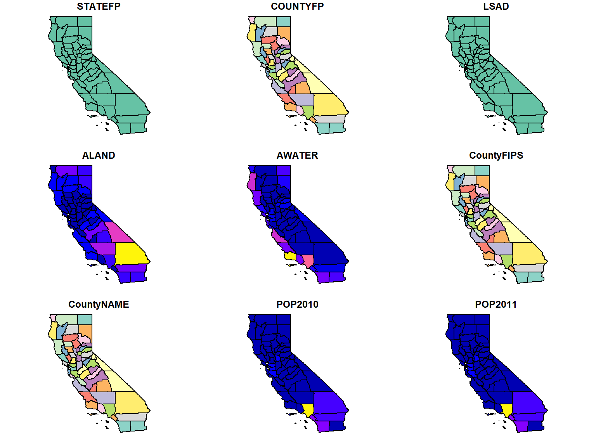
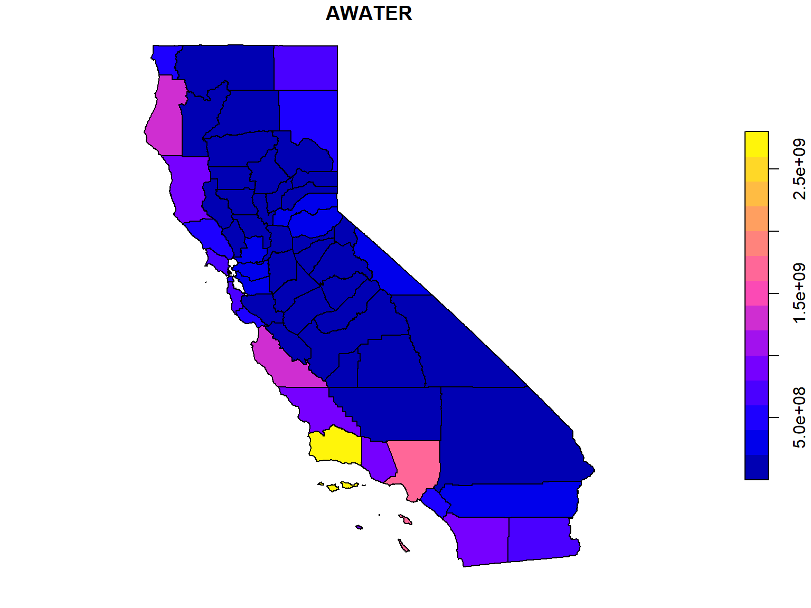
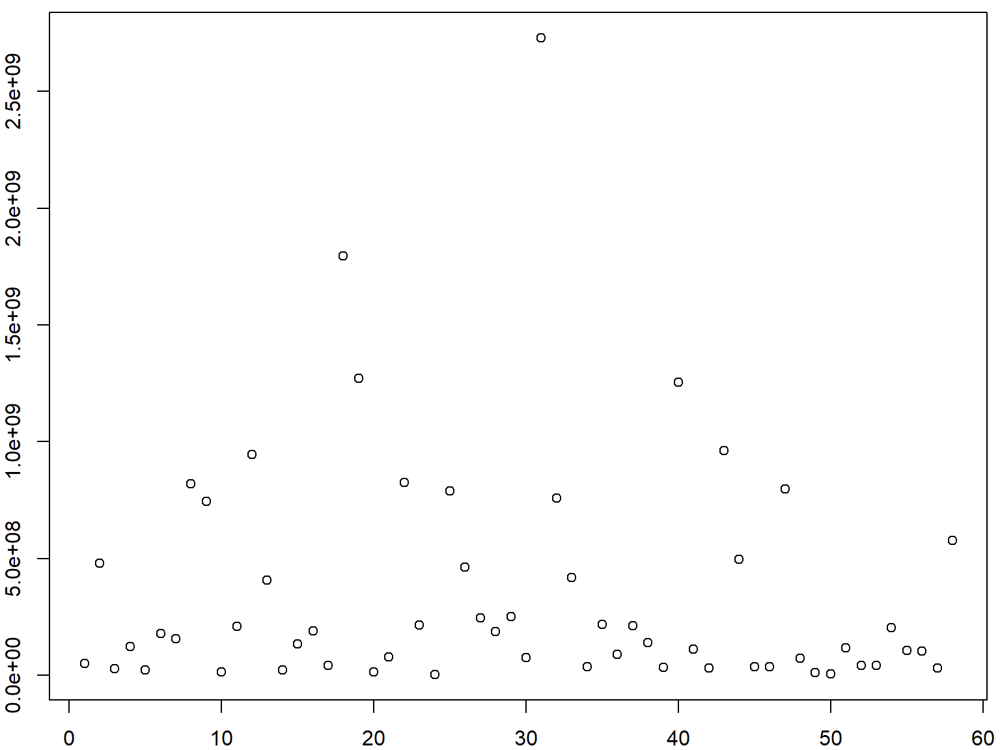

Symbolizing Layers by Attribute Values
plot() attempts to use the attribute table when plotting vector layers. The defaut behavior is to create a plot for every column.
We illustrate this by plotting the county boundaries.
## Import the county boundaries from a GeoJSON file
library(sf)
ca_counties_ll <- st_read("./data/ca_counties.geojson")
## Preview the attribute table
library(tibble)
glimpse(ca_counties_ll)
## Plot it with no arguments
plot(ca_counties_ll)
## Reading layer `ca_counties' from data source
## `D:\Workshops\R-Spatial\rspatial_mod\outputs\rspatial_bgs22\docs\notebooks\data\ca_counties.geojson'
## using driver `GeoJSON'
## Simple feature collection with 58 features and 13 fields
## Geometry type: MULTIPOLYGON
## Dimension: XYZ
## Bounding box: xmin: -124.4096 ymin: 32.53416 xmax: -114.1312 ymax: 42.00952
## z_range: zmin: 0 zmax: 0
## Geodetic CRS: WGS 84
## Rows: 58
## Columns: 14
## $ STATEFP <chr> "06", "06", "06", "06", "06", "06", "06", "06", "06", "06", "06", "06", "06", "06", "06",~
## $ COUNTYFP <chr> "099", "075", "005", "071", "091", "093", "063", "079", "049", "011", "013", "111", "059"~
## $ LSAD <chr> "22", "22", "22", "22", "22", "22", "22", "22", "22", "22", "22", "22", "22", "22", "22",~
## $ ALAND <dbl> 3870792979, 121451664, 1539947591, 51947497395, 2468686345, 16259635719, 6612371925, 8543~
## $ AWATER <dbl> 51176484, 479139414, 29470575, 123929658, 23299112, 179864658, 156389419, 820409436, 7459~
## $ CountyFIPS <chr> "06099", "06075", "06005", "06071", "06091", "06093", "06063", "06079", "06049", "06011",~
## $ CountyNAME <chr> "Stanislaus County", "San Francisco County", "Amador County", "San Bernardino County", "S~
## $ POP2010 <dbl> 515283, 805825, 37860, 2041689, 3221, 44971, 19918, 269860, 9708, 21459, 1052894, 825353,~
## $ POP2011 <dbl> 518270, 816239, 37520, 2064663, 3104, 44719, 19690, 271165, 9499, 21415, 1066587, 830973,~
## $ POP2012 <dbl> 522134, 829691, 37072, 2080651, 3076, 44214, 19341, 274528, 9332, 21397, 1079358, 835476,~
## $ POP2013 <dbl> 526286, 841138, 36602, 2093306, 3040, 43773, 18877, 276284, 9112, 21432, 1095980, 840972,~
## $ POP2014 <dbl> 531997, 852469, 36742, 2112619, 3003, 43628, 18606, 279083, 9023, 21419, 1111339, 846178,~
## $ SQMI <dbl> 1494.52, 46.89, 594.58, 20057.04, 953.17, 6277.88, 2553.05, 3298.75, 3915.40, 1150.73, 72~
## $ geometry <MULTIPOLYGON [°]> MULTIPOLYGON Z (((-121.4868..., MULTIPOLYGON Z (((-122.3321..., MULTIPOLYGON~
## Warning: plotting the first 9 out of 13 attributes; use max.plot = 13 to plot all

This is why we’ve been using the st_geometry() function, which essentially drops the attribute table.
To specify which column to use for symbology, enter the name of the column in square brackets. plot() will select a default symbology based on the data type (e.g., continous vs. discrete).
plot(ca_counties_ll["AWATER"])

What happens when you enclode the name of an attribute column in double square brackets? Can you explain why?
[Answer]
plot(ca_counties_ll[["AWATER"]])

It generates a scatter plot, because double-square brackets returns the column values as a vector of numbers rather than a sf object.